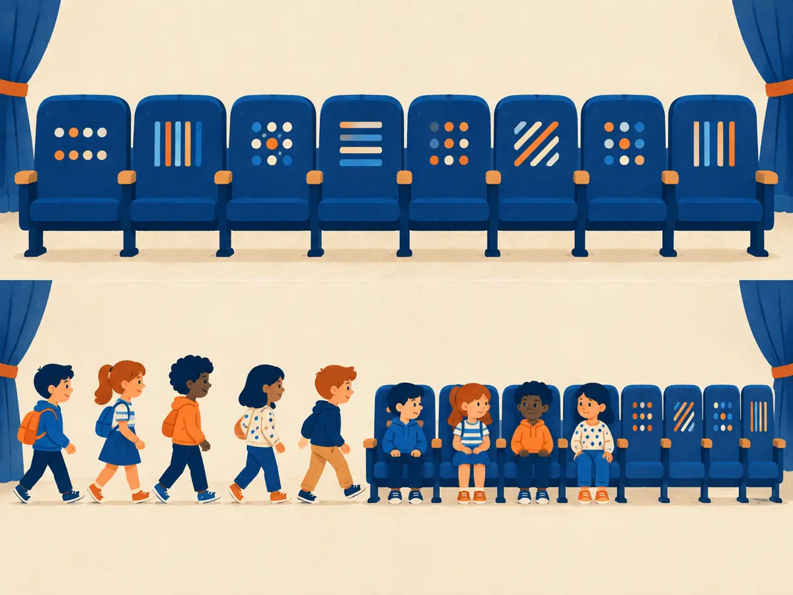

Positional encodings
“Dog bites man” and “man bites dog” use the same three words. Attention, as you've built it so far, can't tell them apart. This lesson shows how transformers inject word order, from simple position vectors to the rotary embeddings used by most LLMs today.
By the end you can
- Explain why self-attention by itself ignores word order.
- Compare learned, sinusoidal and rotary (RoPE) position encodings, and say where ALiBi fits.
- Show with a small calculation that RoPE scores depend only on the distance between two tokens.
Take a guess before reading on.
You shuffle the words of a sentence and feed it to self-attention with no position information and no causal mask. Each word's output vector…
- changes completely
- stays the same; it just appears in a different place in the list
- becomes zero
- becomes random
GPT-2 learned one position vector for each of positions 0 to 1023. What happens if you give it a 1,500-token text?
- It reuses position 1023 for every later token, which works fine
- It automatically learns new positions while reading
- There is no vector for position 1500, so it can't process that length without changes
- Nothing; position vectors don't limit length
Attention is blind to order
Look again at the attention formula, $\mathrm{softmax}(QK^\top/\sqrt{d_k})V$. Every score compares the contents of two tokens. Nothing in it mentions where they are. If you permute the input rows of $X$, the rows of the output get permuted the same way and are otherwise unchanged. Mathematicians call this permutation equivariance. To the model, a sentence is a bag of words.
So order has to be put in from outside. There are two broad approaches: add a position vector to each token at the input, or change the attention scores inside every layer so they depend on positions.
A detail: a causal mask (M1.1) already leaks a little order, since token 5 sees five tokens and token 2 sees two. Decoder models with no position encoding at all (“NoPE”) can learn some positional information this way (Haviv et al., 2022). Still, nearly every production LLM adds explicit positions.
Option 1: add a position vector
Give every position $\text{pos}$ a vector $p_{\text{pos}}$ of length $d_{\text{model}}$ and feed the first layer $x_{\text{pos}} + p_{\text{pos}}$ instead of just the token embedding $x_{\text{pos}}$.
- Learned absolute positions: $p_{\text{pos}}$ is just another trained table, one row per position. BERT (512 positions) and GPT-2 (1,024) and GPT-3 (2,048) did this. Simple, but it can't go past the longest position seen in training.
- Sinusoidal positions (Vaswani et al., 2017) use a fixed formula instead, so any position has a vector:
Here $d$ is the model width and $i = 0, 1, \dots, d/2 - 1$ numbers the pairs of dimensions. Pair $i$ is a sine/cosine wave with frequency $\omega_i = 10000^{-2i/d}$. Pair 0 turns fastest (one radian per token, a full cycle every $2\pi \approx 6.3$ tokens), and the slowest pairs take tens of thousands of tokens per cycle. Together they act like a clock with many hands: each position gets a unique pattern. For example, pair 0 at position 3 is $(\sin 3, \cos 3) \approx (0.14, -0.99)$.
Either way, position is mixed into the token vector once, at the bottom. The model must then learn to untangle “what” from “where”, and nothing forces the score between two tokens to depend on their distance rather than their absolute places.
Explain like I'm 5

Imagine a theatre where the seats have no numbers, but each seat has its own pattern of dots and stripes. Children take their seats in order.
Now when you look at a child, you see the child and the pattern on their seat, so you know where they're sitting. Without the patterns, you'd only know who came, not in what order.
Where it breaks: that's the “add a position vector” idea. RoPE is more like each child turning to face a slightly different direction depending on their seat, so two children can tell how far apart they are just from how differently they're facing.
Option 2: rotate queries and keys (RoPE)
Rotary position embedding (Su et al., 2021, “RoFormer: Enhanced Transformer with Rotary Position Embedding”) leaves the token embeddings alone. Inside every attention layer it splits each query and key into pairs of numbers, treats each pair as a 2-D arrow, and rotates it by an angle proportional to the token's position:
$$\tilde q_m = R(m\theta_i)\,q_m,\qquad \tilde k_n = R(n\theta_i)\,k_n,\qquad R(\phi) = \begin{pmatrix}\cos\phi & -\sin\phi\\ \sin\phi & \cos\phi\end{pmatrix}$$- $m$ and $n$ are the positions of the query token and the key token.
- $\theta_i = 10000^{-2i/d_k}$ is the speed of pair $i$, the same spread of frequencies as the sinusoids. $d_k$ is the head size, so a 128-wide head has 64 rotating pairs.
- $R(\phi)$ rotates a 2-D vector by angle $\phi$. Values $v$ are not rotated.
The payoff is one line. Rotating both and taking the dot product gives $\tilde q_m \cdot \tilde k_n = q_m^\top R(m\theta)^\top R(n\theta)\,k_n = q_m^\top R\big((n-m)\theta\big)\,k_n$, because rotating back by $m\theta$ and forward by $n\theta$ is one rotation by $(n-m)\theta$. So the score sees the contents $q$, $k$ and the relative distance $n - m$, never the absolute positions. Lengths are unchanged, since rotations don't stretch vectors.
RoPE is the default in most open LLMs today: GPT-NeoX, PaLM, the Llama family, Mistral, Qwen, Gemma and DeepSeek all use it, sometimes with a larger base than 10,000 (Llama 3 uses 500,000) so the slowest pairs turn even more slowly.
Try it: rotate a query and a key
Move the two positions, then press “Shift both”. The score (orange dot) only moves when the gap $n - m$ changes. Switch speeds to see how fast pairs repeat quickly while slow pairs change gently.
Worked example
One pair of dimensions, speed $\theta = 30°$ per position. Query $q = [1, 0]$ at position $m = 1$, key $k = [1, 0]$ at position $n = 3$.
- Rotate q by $1 \times 30° = 30°$: $\tilde q = [\cos 30°, \sin 30°] = [0.866,\ 0.5]$.
- Rotate k by $3 \times 30° = 90°$: $\tilde k = [\cos 90°, \sin 90°] = [0,\ 1]$.
- Score: $\tilde q\cdot\tilde k = 0.866 \times 0 + 0.5 \times 1 = 0.5$, which is $\cos 60°$: the arrows are $(3-1)\times 30° = 60°$ apart.
- Shift both by 3 ($m = 4$, $n = 6$): $\tilde q = [\cos 120°, \sin 120°] = [-0.5,\ 0.866]$ and $\tilde k = [\cos 180°, \sin 180°] = [-1,\ 0]$. Score $= 0.5 + 0 = 0.5$ again ✓
Same speed, $\theta = 30°$. Now $q = [2, 0]$ at position $m = 2$ and $k = [1, 0]$ at position $n = 4$.
- $q$ turns by $60°$. Its second entry, $2\sin 60°$, is (its first entry is $2\cos 60° = 1$)
- $k$ turns by $120°$. Its first entry, $\cos 120°$, is (its second is $\sin 120° \approx 0.866$)
- The score $\tilde q \cdot \tilde k =$
- Move both tokens 5 places later. The new score is
ALiBi: a distance penalty instead
ALiBi (Press et al., 2022, “Train Short, Test Long”) adds no vectors at all. It subtracts a penalty proportional to distance straight from each score: $\text{score}_{ij} = q_i\cdot k_j/\sqrt{d_k} - s_h\,(i - j)$, where each head $h$ has its own fixed slope $s_h$ (for 8 heads: $\tfrac12, \tfrac14, \dots, \tfrac1{256}$). Far-away tokens get gently down-weighted, more steeply in some heads than others. It extrapolates to longer inputs better than sinusoidal or learned positions, and was used in BLOOM and MPT, but RoPE has become far more common.
Stretching the context window
A model trained on 4,096-token sequences has never seen RoPE angles beyond position 4,095. Feed it 32,000 tokens and the fast pairs are fine (they've already wrapped around many times), but the slow pairs reach angles never seen in training, and quality usually collapses. Several fixes rescale the angles so long inputs look familiar:
- Position interpolation (Chen et al., 2023): squeeze positions, e.g. use $m \times \tfrac{4096}{32768}$, so 32K tokens fit in the trained angle range. Then fine-tune briefly on long text.
- Raising the base from 10,000 to something much larger slows every pair down (Code Llama used 1,000,000).
- NTK-aware scaling and YaRN (Peng et al., 2023) stretch the slow pairs a lot and the fast pairs little or not at all, keeping local order sharp.
In practice these are combined with a stage of training on long documents. That's roughly how 128K-token context windows are reached, as in Llama 3.1.
Explain to a friend why transformers need positional encodings, and what RoPE does differently from adding a position vector.
Why does a transformer need positional information at all?
- Softmax only works on sorted inputs
- Without it, the model can't compute the $\sqrt{d_k}$ scaling
- Attention scores depend only on token contents, so permuting the input just permutes the output
- To make the embedding table smaller
In RoPE, what gets rotated?
- Each pair of dimensions of the queries and keys, by an angle proportional to position, in every layer
- The token embedding, once, before the first layer
- The values, so the output carries position
- The attention weights after the softmax
With RoPE, the same query and key contents appear once at positions (7, 3) and once at positions (107, 103). Their scores are…
- larger at (107, 103), because later positions rotate more
- smaller at (107, 103), because of distance decay
- unrelated; RoPE scores are effectively random
- identical, because the gap is 4 both times
A model has $d_{\text{model}} = 4096$ and 32 heads (as in M1.2). RoPE works per head. How many 2-D rotating pairs does each head have?
- 2,048
- 64
- 32
- 128
Key takeaways
- Self-attention is permutation-equivariant: without positions, word order is invisible.
- Learned and sinusoidal encodings add a position vector to each token once, at the input.
- RoPE rotates q and k pairs by $m\theta_i$ in every layer, so scores depend on relative distance $n - m$. It's today's default.
- ALiBi subtracts a per-head linear distance penalty from the scores.
- Longer contexts come from rescaling RoPE (interpolation, bigger base, YaRN) plus long-context training.
Add this lesson's cards to your spaced-review deck.